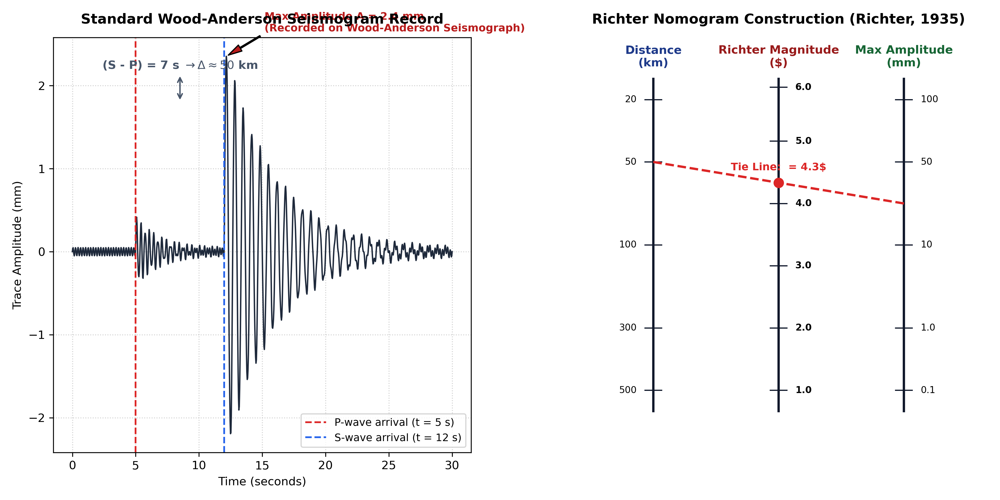

Correct Option: (a) 1 and 3 — Charles Richter developed the Local Magnitude scale ($M_L$) in 1935 as the world's first instrumental scale for objectively sizing earthquakes. It is explicitly defined by the logarithm of the maximum trace amplitude recorded on a Wood-Anderson torsion seismograph. Statement 2 describes energy/moment magnitude ($M_w$), and Statement 4 describes the Modified Mercalli Intensity (MMI) scale.

Prior to 1935, earthquake size could only be evaluated qualitatively using descriptive intensity scales (such as the Rossi-Forel or Mercalli scales), which relied on personal perception, structural destruction, and surface cracks. These varied wildly depending on ground geology, construction quality, and distance from the epicenter.
In 1935, Charles F. Richter (in collaboration with Beno Gutenberg at the California Institute of Technology) formulated the Local Magnitude Scale ($M_L$). It was explicitly created as the first instrumental, objective metric of earthquake size:
The Richter scale was explicitly designed in 1935 as the first instrumental scale in earthquake science. Prior to Richter, seismologists had seismographs but no standardized, quantitative instrumental scale to rate total event size.
The Richter scale ($M_L$) is not directly based on seismic energy release at the focus. It is purely an empirical scale based on maximum record displacement. While empirical regression equations were later developed relating magnitude to radiating energy (e.g., Gutenberg-Richter relation: $\log_{10} E = 4.8 + 1.5 M_S$), the fundamental definition of the Richter scale is amplitude-based, not energy-based. Energy released at the source is properly quantified by Seismic Moment ($M_0 = \mu A_{fault} D$) and the Moment Magnitude Scale ($M_w = \frac{2}{3}\log_{10} M_0 - 10.7$, Kanamori, 1977).
This is the fundamental operational definition of $M_L$. Richter measured the maximum wave amplitude (the largest peak displacement on the seismogram record, usually the $S$-wave or $L_g$ wave train) directly in millimeters from the photographic paper record.
Extent of damage, structural collapse, and human sensation are the definition of Seismic Intensity, measured by the Modified Mercalli Intensity (MMI) Scale (grades I to XII) or MSK-64 scale. A single earthquake has only one magnitude (an instrumental measure of source size), but possesses many different intensities depending on local distance, soil conditions, and building structural vulnerability.
| Parameter | Richter Local Magnitude ($M_L$) | Modified Mercalli Intensity (MMI) | Moment Magnitude ($M_w$) |
|---|---|---|---|
| Measurement Basis | Instrumental: Max trace amplitude on Wood-Anderson seismograph. | Observational: Extent of physical damage and human perception. | Physical / Energetic: Rupture area $\times$ average fault slip $\times$ shear modulus. |
| Mathematical Form | Logarithmic: $M_L = \log_{10} A - \log_{10} A_0$ | Discrete Roman Numerals (I to XII) | $M_w = \frac{2}{3}\log_{10} M_0 - 10.7$ |
| Number of Values | Single unique number per earthquake. | Varies across locations (mapped by isoseismal lines). | Single unique physical value; does not saturate. |
| Invention / Pioneer | Charles Richter (1935) | Giuseppe Mercalli (1902) / Wood & Neumann (1931) | Hiroo Kanamori (1977) & Thomas Hanks (1979) |